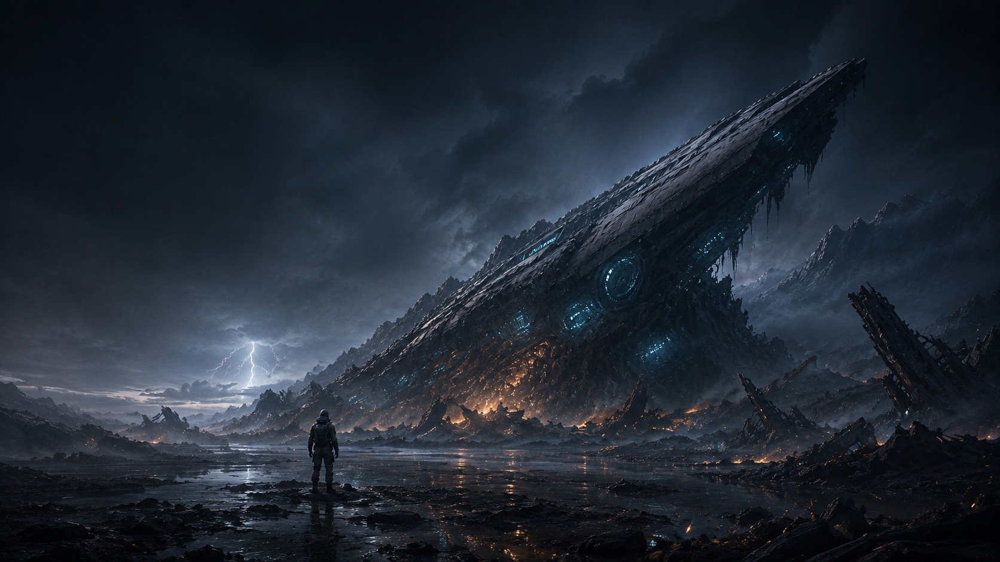
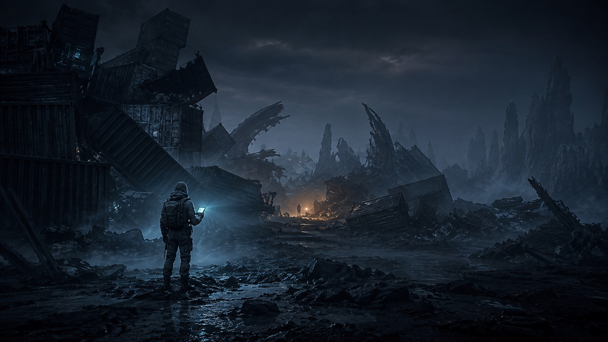
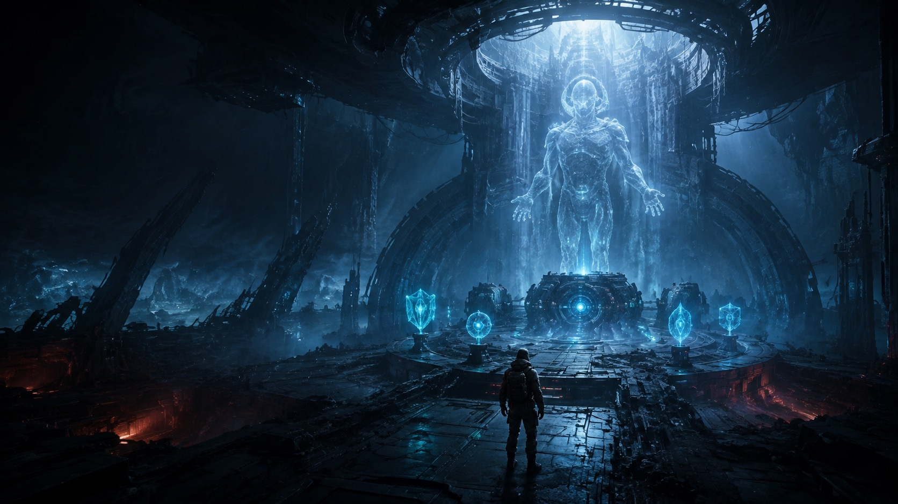

线索、相遇和后续行动分布在不同区域，人物移动会真实反映在地图上。

ARK RECOVERY PROTOCOL // 07
深渊回响
ABYSSAL ECHOES
坠落之后，
人类听见了来自深渊的回声。
在方舟残骸下建立营地，穿过被迷雾吞没的坠毁带，追踪每一位幸存者的选择，寻找文明最后一次启动的真相。
离线单机
迷雾探索
营地建造
多重结局
SCROLL TO DESCEND
SIGNAL 01 坠毁带仍在呼吸
SIGNAL 02 迷雾中有人回应
SIGNAL 03 核心等待最后指令
THE FALL // WORLD
从废墟里，
建立你的第一盏灯。
你在方舟营地醒来，手上只有一枚失效的手环、一把建造枪，以及老乔留下的几块废铁。休眠仓、科技台、资源链——每一处设施都要从残骸中一点点夺回来。
01 搜集
02 建造
03 生存

FIELD LOG // 014
迷雾不会告诉你，
下一步会遇见什么。
探索不是重复点击。地点会在不同步数区间被发现，封锁的通路需要切割工具、门禁卡或特殊钥匙；战斗、资源与NPC相互影响，路线也会记住你真正走过的方向。
- 动态发现 每一次远征都有不同节奏
- 多层地图 地表、遗迹与地下区域彼此连通
- 职业采集 选择会改变行动方式与收益
货柜坟场 // 信号源未知
SURVIVOR NETWORK
他们不是任务图标。
他们会记住你来过。
NPC会离开当前区域、前往新的地点，也会在那里接续自己的故事。你为谁修过设备、替谁保守秘密、错过了哪次求救，都会在核心开启时重新回到你面前。
完成与遗漏都不是无效状态，它们会改变最终同盟、Boss战与真相的完整度。
营地建筑承担制造、研究和自动产出，让远征所得真正改变你的生存方式。

THE LAST PROTOCOL
集齐核心组件，
再决定谁能看见真相。
核心控制室不会因为时间到了就自动开启。每一枚组件都来自一条完整任务线，而最终对峙的胜负，只决定你有没有资格作出最后那个选择。
核心控制室 // 权限封锁
LOCAL SURVIVAL PROTOCOL
真正的单机生存。
网络不是生存条件。
游戏进度保存在设备本地，断网也能继续。只有在迁移手机或主动备份时，才会通过存档码手动上传、下载云存档；没有常驻连接，也不会强制登录。
✓ 本地存档
✓ 手动云备份
✓ 应用内更新
RECOVERY CHANNEL OPEN
方舟仍在等待回应。
带上你的手环。下一次睁眼，营地会记住你。
下载 Android 版ANDROID 8.0+ · APK安装时系统可能提示“未知来源”，请仅从本官方网站下载。